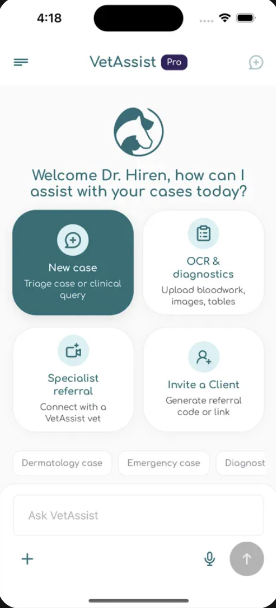
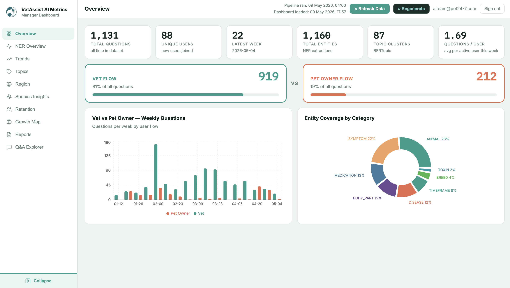

04. what i've built
Projects

VetAssist — Agentic AI Platform
LangGraph ReAct agent replacing a fixed RAG pipeline with dynamic multi-step
reasoning. Wires 7 pluggable tools: KB retriever, fast PostgreSQL session cache,
semantic Milvus history search, OCR document extractor, document store,
image generator, and PDF exporter. 3-checkpoint policy enforcer and
quick/balanced/deep thinking modes controlling ReAct iteration depth.
Streamed via native astream_events.

AI Analytics Dashboard
End-to-end NLP analytics platform for monitoring VetAssist conversations. Two-layer NER pipeline: a curated veterinary dictionary matcher backed by a biomedical token classifier. BERTopic for latent topic discovery with LLM-generated labels. Country-level usage insights, entity co-occurrence graphs, and real-time engagement metrics.
VetAssist — Production RAG Chatbot
End-to-end RAG veterinary assistant with ChromaDB, cross-encoder reranking, per-vet episodic memory, multimodal OCR, SSE streaming, and a two-tier typed query layer.
RAG Vector DB Benchmark
Systematic evaluation of Milvus, Qdrant, and Weaviate for RAG workloads. Measures latency, batch throughput, concurrent load (8 threads), and retrieval quality.

Thesis — LLM Tool Orchestration for Navigation
MSc thesis: LLMs generating executable code to compose vision modules as callable tools for multi-object navigation. ReAct-style reasoning loop with few-shot in-context examples.

Sentiment & Topic Analysis of Product Reviews
Fine-tuned BERT/RoBERTa on Amazon Electronics reviews with focal loss. Applied LDA, NMF, and BERTopic to link latent themes to sentiment patterns.

Vision Transformers & Object Detection
Comparative study of ViT, RF-DETR, and OWL-ViT2 on PASCAL VOC. Evaluated trade-offs between supervised accuracy and open-vocabulary flexibility.

LLM Pruning + LoRA Fine-Tuning
SparseGPT pruning to compress LLMs while preserving near-baseline perplexity, then LoRA adaptation for downstream summarization with a fraction of trainable parameters.

Image Colorization — Conditional GANs
U-Net + ResNet18 encoder with PatchGAN discriminator. Trained on ImageNet in Lab color space. Combined adversarial + L1 loss for realism and color accuracy.